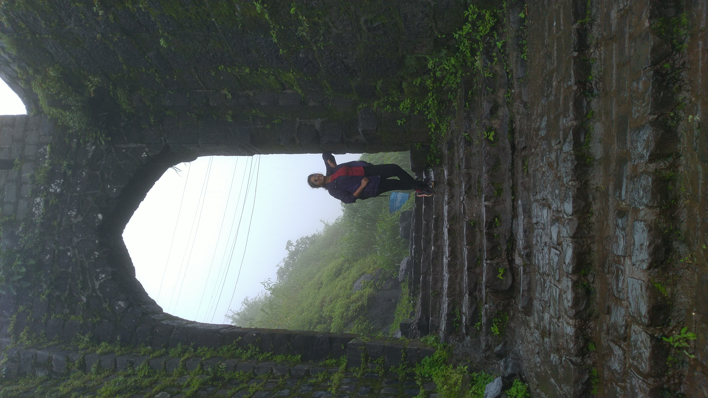
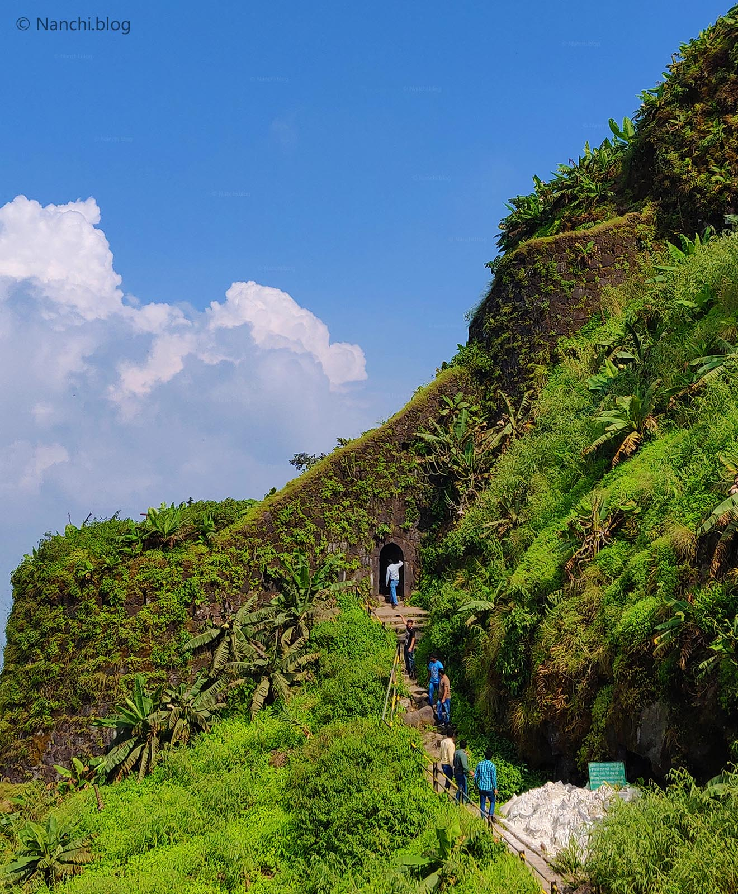
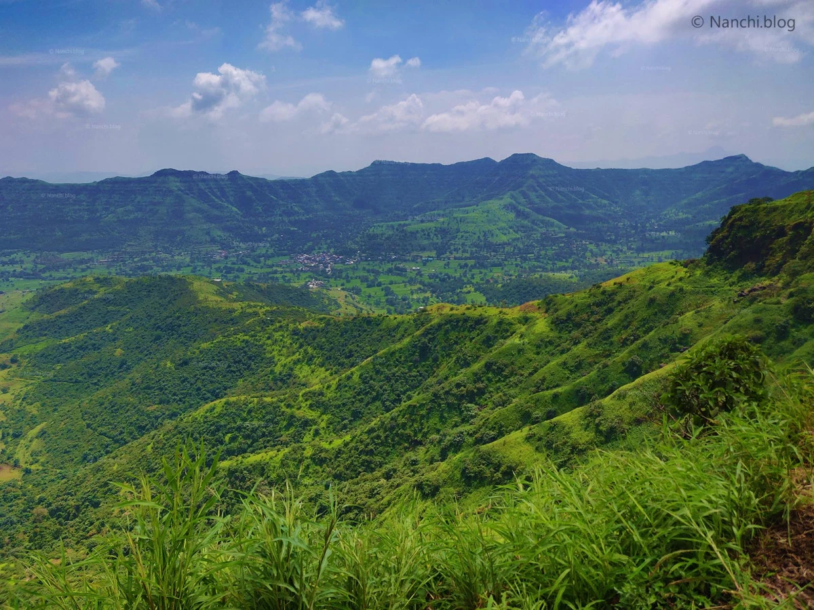
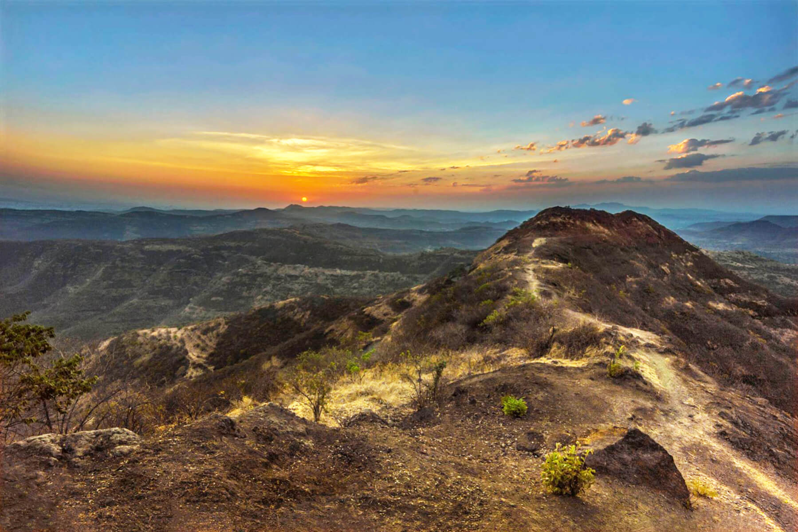
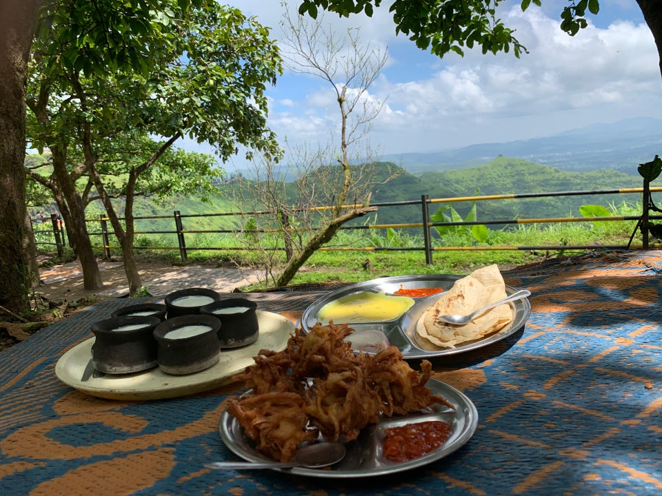

sinhagad fort

Introduction
Sinhagad is an ancient hill fortress located at around 49 km southwest of the city of Pune, India. Previously known as Kondhana, the fort had been the site of many battles, most notably the Battle of Sinhagad in 1670
It is Located near the Pune district in Maharashtra. The fort is also on the famous fort in Maharashtra which has a great history of Tanaji Malusare. The fort was captured by Tanaji Malusare and his brother. Sinhagad (Lion's Fort) fort was strategically built to provide natural protection from the enemies due to its very steep slopes. The walls of the forts and bastions were constructed only at key places. There are two gates to enter the fort named Kalyan Darwaja and Pune Darwaza. The Kalyan Darwaja is towards the southeast while the Pune Darwaza is towards north east.[2] This fort is also called as center fort of Maratha Empire as it is surrounded by many forts beside. During the clear climate you can see Rajgad, Purandar and Torna forts from the Sinhagad killa.Why Should You Visit Sinhagad Fort?
Trekking to this fort is the just-right activity to be a part of the adventure. Indeed, it is the most excellent way to see the sights of this beautiful place. Here, you'll connect with nature in a particular way and enjoy a picturesque view of the city from the top. Sinhagad fort visit is the most excellent way to spend your weekend break. Plan a picnic with your kids here, and they will feel refreshed and re-energized. Here, the tip for you is trekked up the fort in the early morning for a mesmeric sunrise view and don't forget to take a camera along to capture those beautiful moments in it.


> When to visit:
I find it endlessly captivating to explore a location across all seasons. The pictures in this post encompass various visits. While the optimal period to experience Sinhagad Fort is during the monsoon and the subsequent post-monsoon and winter months, spanning from July to January, even as February arrives and the weather warms, the fort's allure remains. Early mornings and sunsets offer a splendid view, ensuring a consistently amazing experience.

Most individuals commonly hike to the summit to relish the splendid sunrise – the sight is truly remarkable, I must emphasize. The awe-inspiring vistas have an addictive quality; I could practically visit every day. Additionally, an alternative scenic motor road is accessible, sparing you the exertion of trekking. This picturesque route remains an option up to the parking area at the summit.

Tickets:
At the starting of the road, there is a ticket counter. The cost is Rs.20/- for two-wheelers and Rs.50/- for four-wheelersEasily dedicating 4-5 hours or a half-day for a family and friends' picnic is quite feasible. Sinhagad Fort sees higher visitation during weekends and holidays. The main mode of exploration is on foot, allowing you to take in the natural marvels from the summit. Among the intriguing elements, the Doordarshan Relay Towers stand out. Additionally, you'll find the Pune Darwaza, Kalyan Darwaza, caves, temples, stables, and ancient structures. Reflecting on the history behind these remnants is captivating, prompting contemplation about life during that era. It's genuinely astonishing, and my sense of wonder is renewed each time.

Find delight in the images and the breathtaking scenery. I'm confident you'll appreciate them. Moreover, ensure not to overlook bringing your cameras to immortalize the splendid encounters visually.